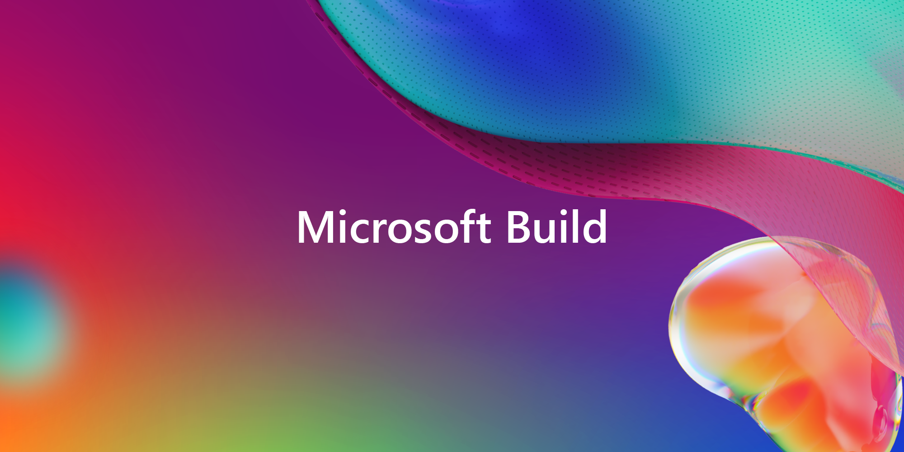

RoguePlanetoid Weekly Update #11
24th March 2023

This week saw the very first Dev Community North East held in Durham and was one of the speakers
where I spoke in a short talk about my experiences at Bede Gaming along with some of the challenges we face and my thoughts about the region, it was amazing with a fantastic
turnout and the other speakers were so great too, I've actually never done a talk where I wasn't directly in front of my computer, I really enjoyed that style and hopefully will
do that again in the future! It is fantastic to see new user groups forming and old ones thriving again and to give my first talk of the year, you can read all about the talks
in my Article.
AI this year is the next big thing in the tech sector, not only something I've covered here about what Microsoft is doing,
which has been added to in the past week with Microsoft Loop which is designed for co-creation and features Microsoft 365 Copilot
along with GitHub Copilot X which is the next-generation of AI assistance to developers. Also other companies such as Adobe
are adding AI to their products with Adobe Firefly which can help generate images, audio, videos and more in their products.
Next week, on Tuesday 28th March, I'll be presenting my first full-length Presentation this year at NEBytes online about Microsoft & AI alongside
Ian Douglas who will be speaking about How to move from Manual Testing to Automated Testing with Postman. There's been a few new things added forming
Microsoft regarding AI that if I'd done it last month it would already be out of date, also the next Episode of my Podcast
will need a few additions before it gets released next week as things have changed in the week since it was recorded!
GitHub Copilot X
22nd March 2023

GitHub Copilot X builds upon the innovations of the
original GitHub Copilot which was built using the Codex Model from OpenAI which has evolved to become a new GPT-4 powered experience
along with chat and voice plus bringing it to pull requests, command line and documentation to help answer questions on your projects.
It refines what it means to be a productive developer, by reducing boilerplate and manual tasks and making complicated work even
easier in every part of the development lifecycle and enable developers to focus on the bigger picture.
GitHub Copilot X will bring a chat interface that focuses on developer scenarios deeply integrated into products such as Visual Studio Code
and Visual Studio, to do more than suggest code it will recognise what has been typed, what error messages are displayed and deliver
in-depth analysis and explanations of what code blocks are doing along with helping to generate unit tests and propose fixes for bugs in the code.
ull Requests are enhanced with AI-powered tags and suggestions for pull request descriptions which can then be reviewed or modified along with
warning developers test coverage is not sufficient and suggest additional tests which can then be edited, accepted or rejected depending
on the needs of the project. It also can provide AI-generated answers about documentation which includes questions developers have about any languages,
frameworks and technologies being used in a project which includes documentation for React, Azure and MDN.
RoguePlanetoid Weekly Update #10
17th March 2023
This week I attended my very first DevOps North East in association with Tech on the Tyne about Self-Service Cloud Infrastructure and GitOps
which was quite interesting and also the first time I've published an Article within minutes of the event finishing, will be a challenge to beat that, but it was an interesting session and good to
add another user group that I've visited to the list!
This week saw the announcement of Microsoft 365 Copilot which is an amazing AI-powered experience that makes it easy to use Word,
Excel, PowerPoint, Outlook, Teams and more with natural language, it was incredible to see the demos and am looking forward to
the opportunity to be able to use it for myself when it gets wider availability.
This week also saw a brand-refresh for the Podcast which I'm very pleased with and will be writing and recording the next episode soon which will be able Microsoft & AI
and I also signed up for Microsoft Build which is going to be Online and in Seattle, although I'm not going in person will be doing the Online event,
which I'm sure will be really interesting and informative. Next week I'll be doing a talk during the very first very first Dev Community North East
event in Durham where I'll be talking about Bede Gaming.
Microsoft Build 2023 Registration
14th March 2023

Microsoft Build 2023 is open for Registration it will be held both online May 23rd - 24th 2023
and in person with an optional pre-day workshop May 22nd - 25th 2023 in Seattle. I've signed up for the online version of the event as the past few years have
been amazing, I even appeared in a small community session at Microsoft Build 2022 last year!
If you get a chance to go in person though, Seattle is an amazing city, I went there for Microsoft Build 2012 and it was incredible seeing all the sights around the city
before the conference, then the conference itself was amazing to be able to meet and speak to so many people in person from Microsoft was fantastic.
You can also check out the Museum of Flight or take a trip further afield to the Boeing Factory which is incredible!
RoguePlanetoid Podcast Refresh
12th March 2023

I've refreshed the RoguePlanetoid Podcast logo to better represent a Podcast with a headphones inspired logo,
this replaces the original abstract logo and am a lot happier with this version. There will be also updated social and related graphics that will be used
for the next Episode which will be about Microsoft & AI so remember to check it out on April 1st 2023!
There's only been a few downloads so far for the Podcast but know that more people will listen to it in the future, and just like the brand
refresh I know I can improve on it each Episode along with having guests in the future, if you have any feedback then you can use
Twitter to contact me with any suggestions, ideas, guests or if you want to appear on the Podcast too.
RoguePlanetoid Weekly Update #9
10th March 2023
If you're wondering why things have been a bit quieter this month, I've been putting together my Presentation for NE Bytes later this month about Microsoft & AI
I'll also be doing a talk for the very first Dev Community North East event in Durham where I'll be talking about Bede Gaming
along with some of my experiences along the way here in the North East so will be great to put together that short talk this month too!
I'll be doing a brand refresh of the RoguePlanetoid Podcast now that Anchor has become Spotify for Podcasters so would need update them anyway!
I'm looking forward to being able to create something that looks a bit better for those, also thanks to anyone who has been listening to the RoguePlanetoid Podcast so far and will be writing the next episode which will
be about Microsoft & AI where I'll go into a bit more depth on a few points from my Presentation.
I'm aiming to publish more Articles this year about a variety of things along with talking about things on the Podcast, so if there's anything you'd like me to take a look at
or want to talk to me or suggest and idea for an Article or a Podcast then let me know via Twitter at @RoguePlanetoid.
Will be great to be able to engage more with the community and if there's an Article or a Podcast you think I should appear on then feel free to get in touch too!
RoguePlanetoid Weekly Update #8
3rd March 2023
This week saw the release of Episode Two of the RoguePlanetoid Podcast about the Windows App SDK.
Is great to be able to share interests with others in a new way, having done Presentations and Articles before it is good to be able to add a Podcast!
For those who might be interested I use the Shure MV-7 microphone and record using Sound Recorder in Windows 11 and then edit using Audacity
and then use Microsoft ClipChamp to create the version for YouTube and distribute the audio version using Anchor.
This month will be my very first Presentation for this year which will be about Microsoft & AI for NEBytes
where will be talking about the new innovations from Microsoft such as the new Bing with a overview of how it works and showing it in action along with Microsoft Designer to create
some designs and images aided by AI.
There's also something I helped out with which I'll hopefully be able to share details of soon, when someone reached out to me about a project I'd done, which might be easy to guess if know what projects I have done.
It is amazing to think the impact that project has had and to have someone else use that as a basis in their own work is fantastic and looking forward to sharing details when I can.
RoguePlanetoid Podcast - Episode Two - Windows App SDK
1st March 2023
Today sees second Epsiode of the RoguePlanetoid Podcast
about Windows App SDK which gives an overview of the Windows App SDK
including where it came from and a bit more information about it and how you can get started along with altenatives.
You will find the Podcast where you listen to your podcasts such as Spotify along with YouTube
will be posting episodes each month and hopefully get some involvement with other members of the community and fellow podcasters!